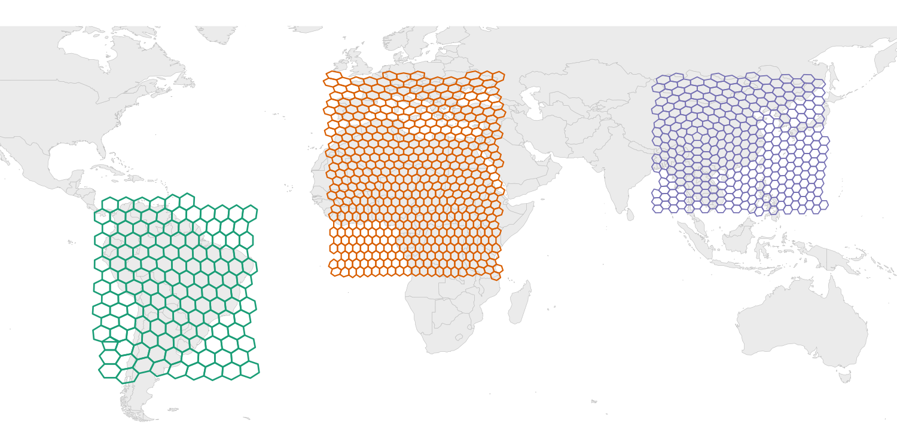

Equal-Area Hexagonal Grids for Global Spatial Analysis

hexify assigns geographic coordinates to equal-area hexagonal grid cells using the ISEA (Icosahedral Snyder Equal Area) projection. Every cell has the same area regardless of latitude, eliminating the sampling bias inherent in rectangular lat-lon grids. H3 is supported for compatibility with existing H3 workflows.
Quick Start
library(hexify)
cities <- data.frame(
name = c("Vienna", "Paris", "Madrid"),
lon = c(16.37, 2.35, -3.70),
lat = c(48.21, 48.86, 40.42)
)
# ISEA equal-area grid (default)
grid <- hex_grid(area_km2 = 10000)
result <- hexify(cities, lon = "lon", lat = "lat", grid = grid)
plot(result)
# H3 grid (Uber's system)
h3_grid <- hex_grid(resolution = 4, type = "h3")
result_h3 <- hexify(cities, lon = "lon", lat = "lat", grid = h3_grid)
plot(result_h3)Statement of Need
Spatial binning is fundamental to ecological modeling, epidemiology, and geographic analysis. Standard approaches using rectangular lat-lon grids introduce severe area distortions: a 1° cell at the equator covers ~12,300 km², while the same cell near the poles covers a fraction of that area. This violates the equal-sampling assumption underlying most spatial statistics.
Discrete Global Grid Systems (DGGS) solve this by partitioning Earth’s surface into cells of uniform area. hexify’s primary backend is ISEA (Icosahedral Snyder Equal Area): true equal-area hexagonal grids with apertures 3, 4 and 7 in any sequence, implemented in C++ with no external dependencies. For interoperability with industry ecosystems (FCC, Foursquare, DuckDB), hexify also supports H3 grids via a vendored C library.
Equal-area grids are directly applicable to:
- Species distribution modeling and biodiversity assessments
- Epidemiological surveillance and disease mapping
- Environmental monitoring and remote sensing aggregation
- Any analysis requiring unbiased spatial binning
Why Hexagonal Grids?
Equal-area hexagonal grids bring three properties to spatial binning:
- Equal area — hexify places ISEA cells with the Snyder equal-area projection, so every cell covers the same surface area from equator to pole
- Uniform adjacency — all six neighbors share an edge and sit at the same distance from the cell center, so neighborhood statistics carry no directional bias
- Compactness — the hexagonal tiling minimizes perimeter per unit area among all equal-area partitions of a plane (Hales’ honeycomb theorem), which keeps edge effects small
Rectangular lat-lon grids, by contrast, shrink toward the poles: a 1° cell at 60°N has half the area of the same cell at the equator.
Features
Core Workflow
-
hex_grid(): Define a grid by target cell area (km²) or resolution level -
hexify(): Assign points to grid cells (data.frame or sf input) -
plot()/hexify_heatmap(): Visualize results with base R or ggplot2 -
Any body:
hex_grid(area_km2 = 1000, radius_km = "mars")sizes a grid on Mars, the Moon, Titan, or any radius you give — both backends
Grid Generation
-
grid_rect(): Generate cell polygons for a bounding box -
grid_global(): Generate a complete global grid (all cells) -
grid_clip(): Clip grid to a polygon boundary (country, region, etc.)
Cell Operations
-
cell_to_sf(): Convert cell IDs to sf polygon geometries -
cell_to_lonlat(): Get cell center coordinates -
get_parent()/get_children(): Navigate grid hierarchy
Interoperability
-
as_dggrid()/from_dggrid(): Convert to/from dggridR format -
as_sf(): Export HexData to sf object -
as.data.frame(): Extract data with cell assignments -
H3 support:
hex_grid(resolution = 8, type = "h3")— vendored H3 C library, no extra install needed
Installation
# Install from CRAN
install.packages("hexify")
# Or install development version from GitHub
# install.packages("pak")
pak::pak("gcol33/hexify")Usage Examples
Basic Point Assignment
library(hexify)
# Define grid: ~10,000 km² cells
grid <- hex_grid(area_km2 = 10000)
grid
#> HexGridInfo Specification
#> -------------------------
#> Aperture: 3
#> Resolution: 8
#> Area: 7773.97 km^2
#> Diagonal: 94.74 km
#> CRS: EPSG:4326
#> Total Cells: 65612
# Assign coordinates to cells
coords <- data.frame(
lon = c(-122.4, 2.35, 139.7),
lat = c(37.8, 48.9, 35.7)
)
result <- hexify(coords, lon = "lon", lat = "lat", grid = grid)
# Access cell IDs
result@cell_idGenerating Grid Polygons
# Grid for Europe
grid <- hex_grid(area_km2 = 50000)
europe_hexes <- grid_rect(c(-10, 35, 40, 70), grid)
plot(europe_hexes["cell_id"])
# Clip to a country boundary
library(rnaturalearth)
france <- ne_countries(country = "France", returnclass = "sf")
france_grid <- grid_clip(france, grid)Aggregating Point Data
# Species occurrence data
occurrences <- data.frame(
species = sample(c("Sp A", "Sp B", "Sp C"), 1000, replace = TRUE),
lon = runif(1000, -10, 30),
lat = runif(1000, 35, 60)
)
# Assign to grid
grid <- hex_grid(area_km2 = 20000)
occ_hex <- hexify(occurrences, lon = "lon", lat = "lat", grid = grid)
# Count per cell
occ_df <- as.data.frame(occ_hex)
occ_df$cell_id <- occ_hex@cell_id
cell_counts <- aggregate(species ~ cell_id, data = occ_df, FUN = length)
names(cell_counts)[2] <- "n_records"
# Richness per cell
richness <- aggregate(species ~ cell_id, data = occ_df,
FUN = function(x) length(unique(x)))
names(richness)[2] <- "n_species"Visualization
# Quick plot
plot(result)
# Heatmap of records per cell, with a world basemap
hexify_heatmap(occ_hex, basemap = "world")
# Custom ggplot
library(ggplot2)
cell_polys <- cell_to_sf(cell_counts$cell_id, grid)
cell_polys <- merge(cell_polys, cell_counts, by = "cell_id")
ggplot(cell_polys) +
geom_sf(aes(fill = n_records), color = "white", linewidth = 0.2) +
scale_fill_viridis_c() +
theme_minimal()Known Limitations
- H3 grids: Fixed aperture 7, maximum resolution 15 (~0.9 m² cells). ISEA grids support apertures 3, 4 and 7 in any sequence up to resolution 30.
-
H3 cell area: H3 cells are gnomonic rather than equal-area, and hexagon area varies by about a factor of 2 within a resolution (about 2.4 including the pentagons). Use ISEA where equal area matters, and
cell_area()to read the area of a given H3 cell. -
Pentagons: Any hexagonal tiling of a sphere requires exactly 12 pentagonal cells (at icosahedron vertices). These cells have 5 neighbors instead of 6. Use
is_pentagon()to detect them. -
Projection precision: The inverse Snyder projection uses iterative Newton-Raphson convergence. Default precision is sufficient for sub-meter accuracy; use
hexify_set_precision()to adjust the speed/accuracy trade-off.
Documentation
- Quick Start - Basic concepts and workflow
- Visualization - Plotting with base R and ggplot2
- Workflows - Grid generation, clipping, multi-resolution analysis
- H3 Grids - Working with the H3 backend and crosswalking to ISEA
- Mathematical Foundations - Snyder projection, aperture quantization, indexing
Support
“Software is like sex: it’s better when it’s free.” — Linus Torvalds
I’m a PhD student who builds R packages in my free time because I believe good tools should be free and open. I started these projects for my own work and figured others might find them useful too.
If this package saved you some time, buying me a coffee is a nice way to say thanks. It helps with my coffee addiction.